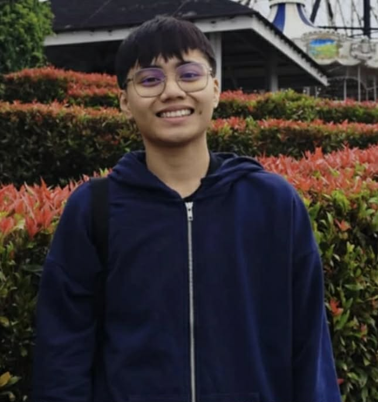

Welcome to my Portfolio
Hello! My name is Anna Marie Zolina. I am a 20-year-old 3rd Year Computer Engineering student at the Technological Institute of the Philippines – Rodriguez, Rizal.
My interests include robotics, IoT systems, automation, and embedded systems. I enjoy designing and building engineering projects that combine hardware and software.
BSCPE | 3rd Year
Recent Projects
IoT Smart System – UMAK Competition
Developed an IoT-based smart system designed for automation and monitoring. The system integrates sensors, microcontrollers, and wireless communication to collect real-time data and improve efficiency in smart environments.
IoT • Sensors • Microcontroller • Automation
Sumo Bot – CPE Summit
Designed and built an autonomous sumo robot for competition. The robot uses sensors for opponent detection and motor drivers for powerful movement within the sumo ring.
Arduino • Sensors • DC Motors • Robotics
3-in-1 Bot – MRSP Project
Multi-function robot capable of performing different robotic tasks. Designed for flexibility and learning different robotics control methods.
Arduino • Robotics • Embedded Systems
Servo Arm with Wheels
A robotic arm integrated with a mobile wheel base allowing object manipulation and movement. The system uses servo motors for arm movement and a motor driver for mobility.
Servo Motors • Arduino • Robotics Control
Skills & Certifications
Certifications
- CCNA: Switching, Routing, Wireless (2025)
- CCNA: Introduction to Networks (2025)
- Junior Cybersecurity Analyst (2025)
- IT Essentials (2024)
Experience
- 3rd Year CPE Outreach
- 2nd Year CPE Outreach
- RoboRumble IoT Conference
- MRSP Robotics Participant
- UMAK Competition Participant
Contact
Email: zolinaannamarie83@gmail.com
Phone: 09205680073
Facebook: Anna Marie Zolina
Location: Rodriguez, Rizal